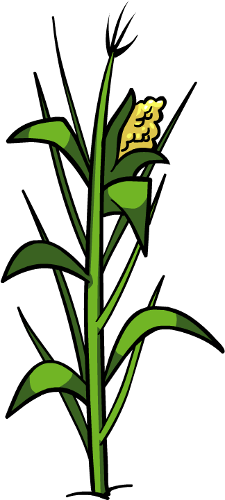
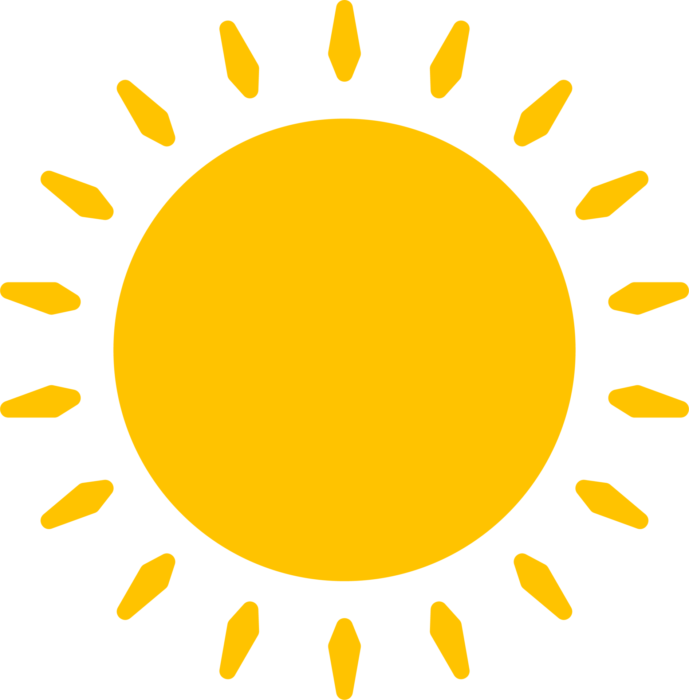
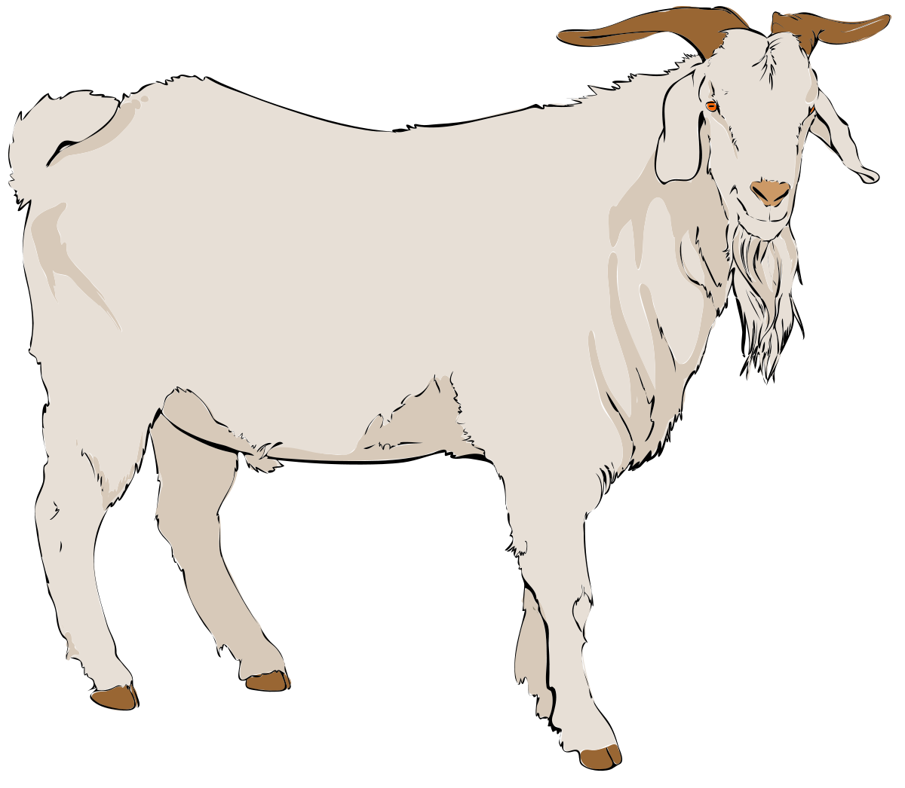

Welcome to Farmstand! Our mission is to promote local farmers by giving them a platform to share their farms. Eating locally is better for the environment, helps support local economy, and ensures your food is as fresh as can be. Browse local farms for produce or start your own!
- The Farmstand Team
  